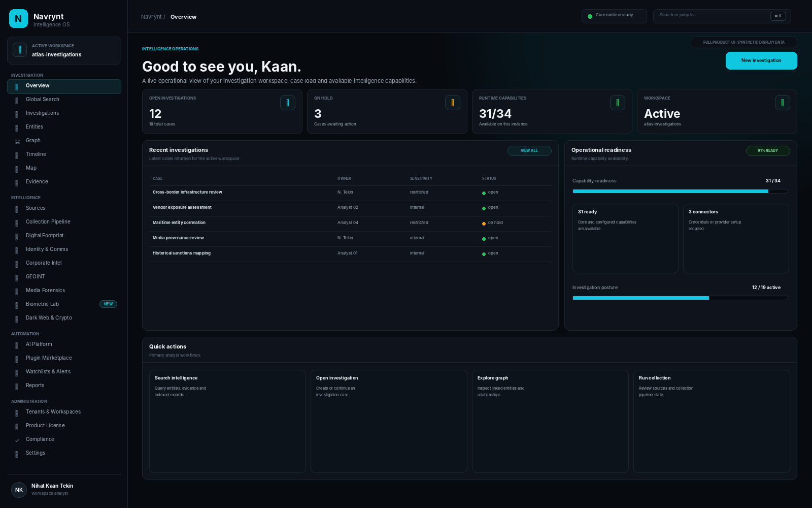
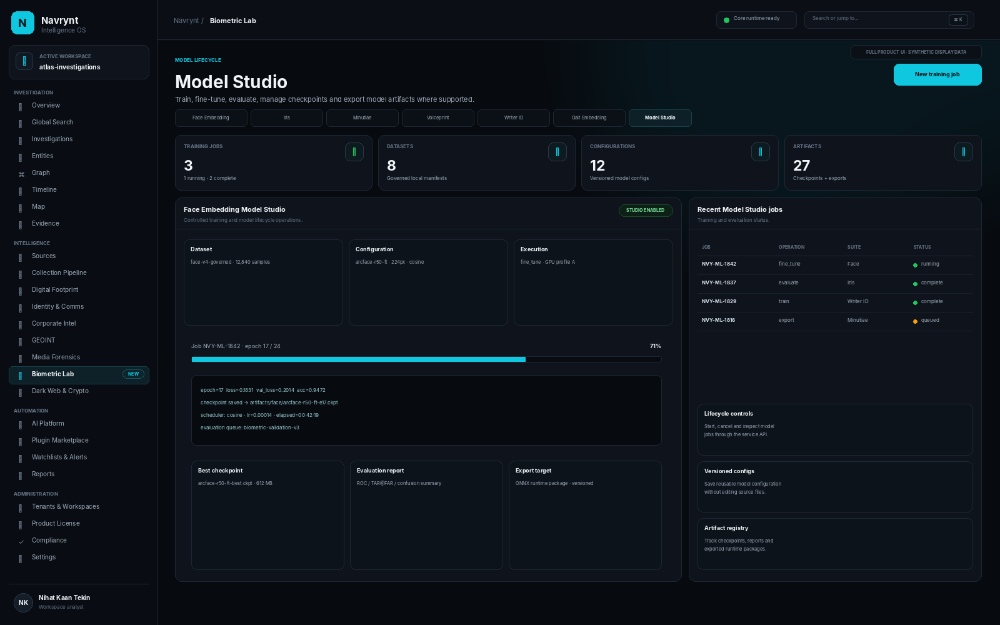

NAVRYNT 1.0 · COMMERCIAL SOURCE SOFTWARE
One intelligence platform.
One intelligence platform.
Your infrastructure.
Your source.
Investigation workflows, evidence and provenance, entity and graph analysis, GEOINT, media forensics, AI-assisted analysis, extensible collection, plugins and six integrated biometric suites — in one self-hosted codebase.
Full first-party source25 internal users3 production deploymentsPerpetual Navrynt 1.x

PLATFORM24+ product routesInvestigation, intelligence, governance and model surfaces
DEPLOYMENTLocal-firstNo mandatory NAVRYNT cloud
THE FULL PRODUCT
Built around the entire investigation lifecycle — not a single dashboard.
NAVRYNT combines operational investigation surfaces with source collection, evidence handling, graph and geospatial analysis, AI-assisted workflows, model lifecycle tooling and governance controls. The Business Source package includes both product interfaces and the first-party implementation behind them.
Explore the complete platform map →Investigate
Cases, evidence, provenance, notes, tasks, activity, timelines, reports, watchlists and investigation snapshots.
CasesEvidenceTimelineReports
Connect
Entity normalization, correlation review, resolved entities, relationship graphs, provenance graphs and knowledge graph surfaces.
EntitiesGraphCorrelationKnowledge
Collect
Source registry, collection schedules, pipelines, ingestion operations, web crawl and plugin-based collectors without rewriting the core application.
SourcesPipelinesPluginsCrawl
Analyze
GEOINT, media analysis, deepfake and manipulation paths, document extraction, multilingual processing and AI-assisted enrichment.
GEOINTMediaAIMultilingual
Govern
RBAC, audit, workspace and tenant controls, compliance surfaces, policies, product licensing and operational observability.
RBACAuditTenantsCompliance
Build
REST API, CLI, SDK, browser extension, Docker/Compose, plugin runtime and six isolated biometric/model services.
RESTCLISDKDocker
PRODUCT WALKTHROUGH
Move from mission context to specialist workflows without leaving the platform.
Mission OverviewBUSINESS SOURCE PRODUCT
Full product mediaSource + UI + API + deployment assets
BIOMETRIC LABSix modalities.
Six modalities.
One governed workbench.
The six biometric suites remain isolated model services so heavy dependencies do not have to live inside the NAVRYNT core runtime. Workbench and Model Studio expose supported operational and lifecycle paths through the platform.
See the complete biometric capability matrix →
Face Embedding
Embedding, enrollment, verification, recognition, gallery workflows, training/fine-tuning, evaluation and export.
Iris
Enrollment, top-k identification, scratch/fine-tune metric learning, evaluation, benchmark and export.
Minutiae
Quality, extraction, 1:1 matching, 1:N identification, classical/deep/ONNX paths and training workflows.
Voiceprint
Multi-audio enrollment, verification, top-k identification, threshold calibration, ECAPA lifecycle and export.
Writer-ID
Batch embedding, verification, gallery search, pretraining, fine-tuning, hard-negative mining and evaluation.
Gait Embedding
Sequence embedding, verification, zero-shot workflows, CMC/mAP, cross-view evaluation and visualization.
MODEL STUDIO
Lifecycle tooling without turning the browser into an unrestricted shell.
Model Studio dispatches approved native suite entrypoints and managed configurations for supported scratch training, fine-tuning, evaluation, benchmark, checkpoint and export workflows.
01Dataset02Configure03Train / Fine-tune04Evaluate05Export

ARCHITECTUREModular by design.
Modular by design.
Self-hosted by default.
The product keeps domain logic separate from delivery frameworks and external integrations, while optional heavy ML runtimes remain behind isolated services or extras.
Explore the architecture →CLIENT SURFACESReact / Vite UIBrowser ExtensionCLI / SDK
REST / WebSocket / typed contracts
NAVRYNT CORE
InterfacesAPI · CLI · bootstrap
ApplicationUse cases · ports · events
DomainModels · rules · value objects
InfrastructureStorage · collectors · providers
isolated service / plugin boundaries
EXTENSION & MODEL LAYERPlugins / CollectorsLLM / AI Providers6 Biometric ServicesStorage / Retrieval
WHAT THE BUSINESS SOURCE PACKAGE INCLUDES
Application sourcePython backend, premium React/Vite frontend, REST API, CLI and application/domain/infrastructure code.
Extension surfacesPlugin runtime, plugin SDK, client/developer SDK components, browser extension and collector architecture.
DeploymentDocker/Compose files, configuration examples, dependency locks, automated tests, CI definitions and developer documentation.
BiometricsFace, iris, fingerprint, voiceprint, writer-ID and gait suites with Workbench and Model Studio integration.
FULL PRODUCT MEDIA
See the Business Source product, not a reconstructed demo.
This site uses the official NAVRYNT 1.0 Store Media package supplied for the commercial release.
NAVRYNT Business Source · Product Film02:00
Product gallery
AI PLATFORM
Pluggable analysis instead of one locked provider.
NER extraction, classification, summarization, semantic retrieval, RAG, model routing, benchmarking, multilingual processing and provider orchestration are exposed as governed platform capabilities.
Semantic search & RAGNER & text classificationSummarization & translationModel registry & routingActive-learning feedbackLocal / API provider interfaces
GEOINT + MEDIA
Spatial and media evidence stay connected to investigation context.
Coordinate and projection tooling, geospatial analysis, map workflows, media metadata, manipulation/deepfake paths, reverse-image and geolocation surfaces can feed the broader evidence and provenance model.
Map & coordinate workflowsSpatiotemporal correlationMedia analysis & geolocationDeepfake / manipulation pathsScene / object analysisEvidence provenance
NATIVE PRODUCT LICENSE
Marketplace-independent runtime verification.
Each paid Business Source grant can be represented by a seller-signed NVY1 token / .nvylic file. NAVRYNT verifies it locally using a bundled Ed25519 public key instead of requiring a permanent payment-provider call-home.
PlanBusiness SourceUsers25 internalProduction3 deploymentsVersionPerpetual 1.x
BUSINESS SOURCE
One commercial plan.
One commercial plan.
No artificial product tiers.
The standard NAVRYNT offer is a one-time Business Source purchase for one licensed legal entity.
Direct bank transfer / IBANEmail purchase / procurementOptional external card marketplace
NAVRYNT BUSINESS SOURCEONE-TIME
$2,490USD
- Full first-party source code
- Python backend + premium React frontend
- Six first-party biometric suites
- Biometric Workbench + Model Studio
- Plugin/SDK + browser extension source
- Docker/Compose + tests + CI definitions
- 25 internal authorized users
- 3 production deployments
- Perpetual use of lawfully received Navrynt 1.x
FAQ
Commercial and technical essentials.
Is NAVRYNT a SaaS product?
No. The standard Business Source product is self-hosted commercial source software. There is no mandatory NAVRYNT-hosted cloud for normal operation.
Is the source code included?
Yes. The commercial package includes the licensed first-party NAVRYNT backend, frontend and supporting product source described on this site.
Are all six biometric modules included?
Yes: Face Embedding, Iris, Fingerprint Minutiae, Voiceprint, Writer-ID and Gait Embedding. Model weights and real biometric datasets are not automatically included unless explicitly stated and lawfully redistributable.
Can the source be modified?
Internal modification is permitted within the Business Source license scope for the licensed entity. Redistribution, resale, SaaS/OEM and service-provider use require separate written rights.
Does NAVRYNT require a payment provider to run?
No. Runtime entitlement is verified locally using NAVRYNT's seller-signed license. The official website supports direct bank-transfer and email purchase without a commerce backend.
What do I need to run the product?
Python 3.12+ for the backend, Node.js/npm to build the React/Vite frontend, and Docker + Docker Compose are recommended for the complete stack and biometric sidecars. Optional provider/model features may need separate lawful credentials, dependencies, datasets or checkpoints.
NAVRYNT 1.0
Own the source. Keep the deployment. Extend the workflow.
Review the public demo, inspect the full product media, then purchase directly by bank transfer or email. A separate external marketplace option is available for card buyers.